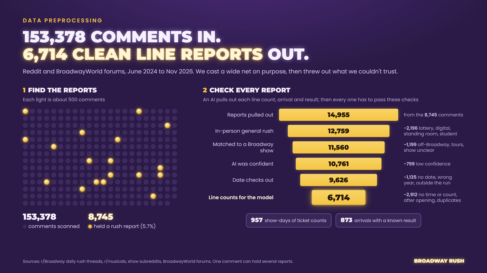
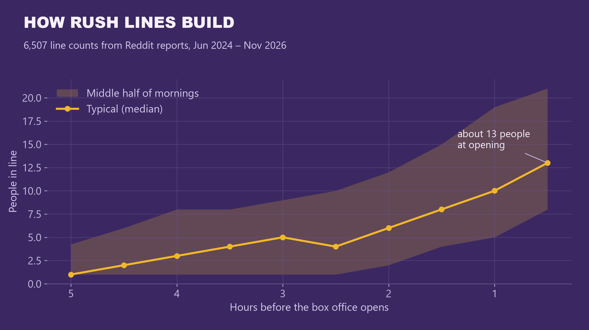
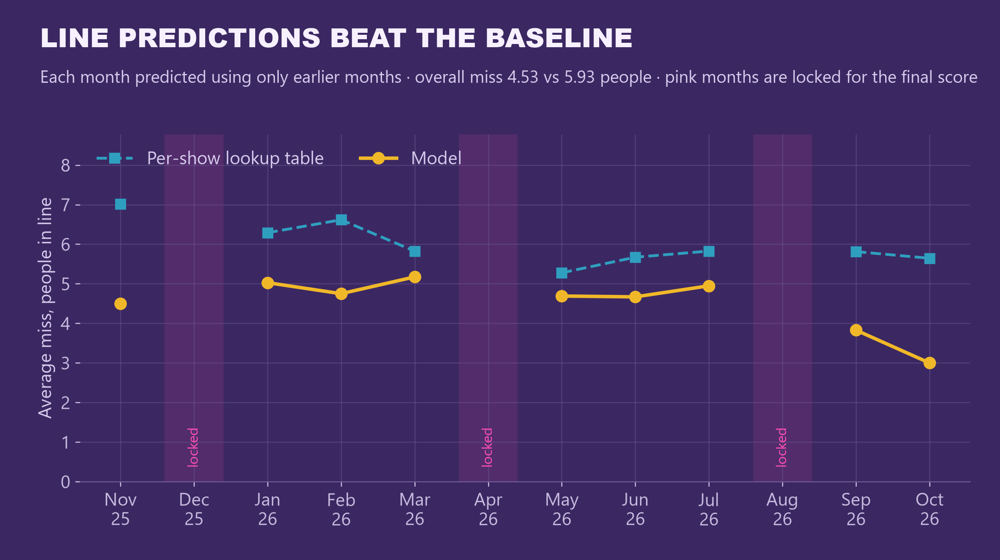
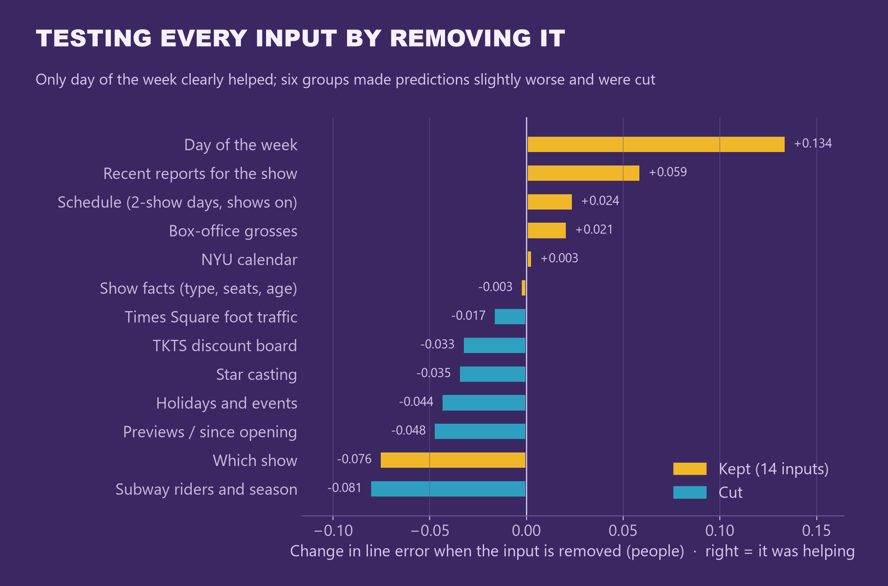
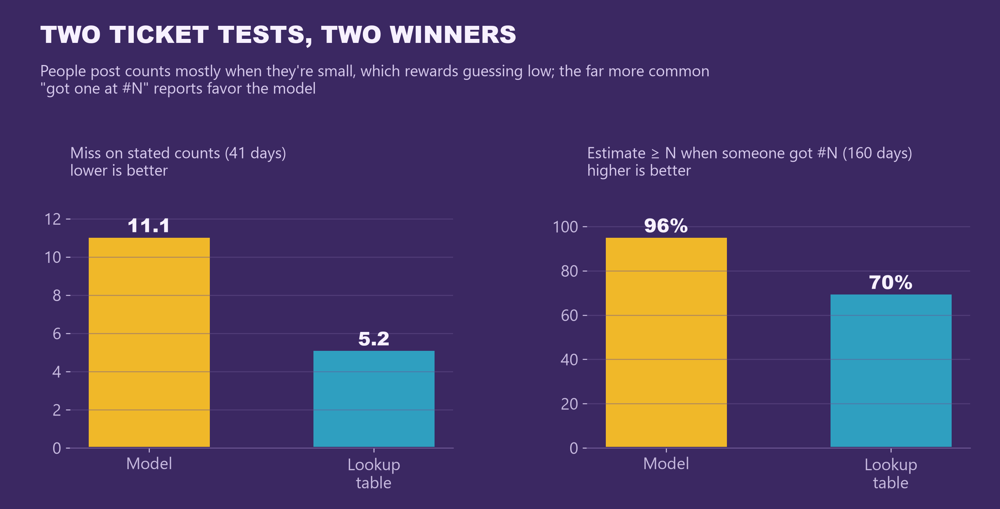
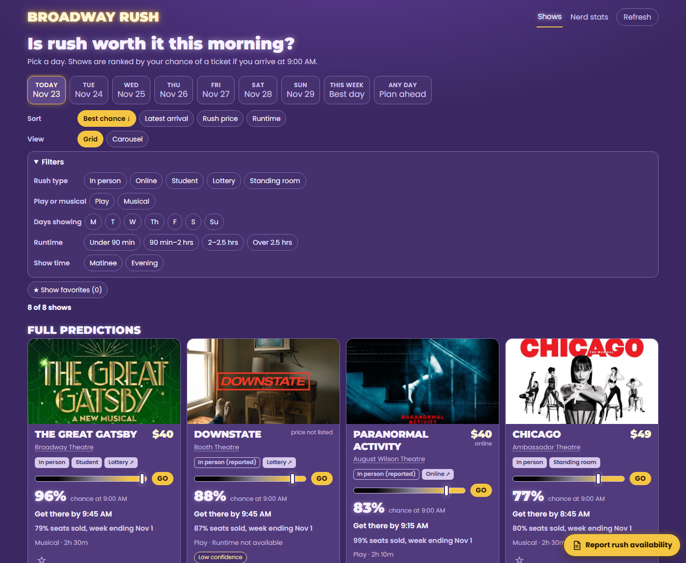

Some Broadway shows sell cheap rush seats when the box office opens. First come, first served. Lines can start hours early, and tickets can run out after a handful of people.
No dataset of rush lines existed, so I built one before building a model.


LightGBM gradient-boosted trees predict people in line at each hour before opening, with an 80% range.
Hierarchical Bayesian negative-binomial (NumPyro, NUTS). It learns from exact counts plus censored clues: "got one at #N" means at least N; "sold out before me at #N" means fewer than N. Thin shows borrow strength from the rest.
Simulate the line at your arrival time and the day's ticket supply, then count how often your spot still gets a ticket.


Star casting, TKTS and Times Square traffic didn't earn their place: with this much data, extra inputs add noise. The lean model: 4.65 → 4.52 people average miss.


Shows ranked by your chance of a ticket for each of the next 7 days, with arrival advice, filters, and a "Nerd stats" page with every test result.